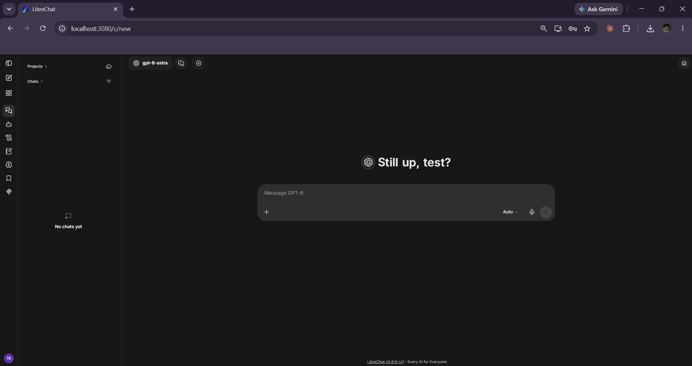
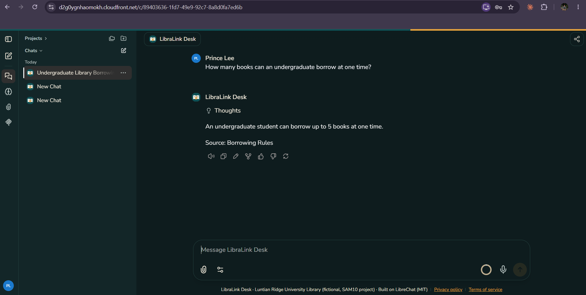

Our system, and its system card
What we started from, what we changed so it became our own, and an honest card describing what it does, what it cannot do, and who should not use it.
The reskin: before and after

evidence/E-05-original-librechat.png: stock LibreChat running locally BEFORE the reskin (default logo, name, green buttons), ideally the login page or an empty chat.
evidence/E-01-libralink-desk.png: LibraLink Desk at the HTTPS address, showing the logo, colours and a real question + answer (e.g. "How many books can an undergraduate borrow?").E-02 — address: FILL: https://xxxx.cloudfront.net (accounts are created by us; ask us for a demo login).
The four required changes (brief section 1.1)
| Requirement | What we did | Where it is |
|---|---|---|
| 1. Identity | New name "LibraLink Desk", our own logo (an open book with a chain link for a spine), teal-and-amber colour scheme, Nunito Sans font, new welcome text, footer, terms pop-up and browser icons. Any leftover "LibreChat" wording on screen is replaced. | app/branding/, app/librechat.env, app/nginx/nginx.conf |
| 2. Data | A six-part library handbook we wrote ourselves (~1,700 words): hours, borrowing, fines, rooms and equipment, digital resources, contacts. Plus our 30 labelled test questions. | content/*.md (stored in S3), eval/questions.json |
| 3. Domain language | Library terms throughout: circulation, holds, Red Tag books, renewals, clearance, interlibrary loan. Our rules make the assistant cite handbook sections, refuse account look-ups and decisions, warn about personal data, and reply in Filipino/Taglish when asked in Filipino. | app/system-prompt.txt, app/librechat.yaml.tmpl |
| 4. AWS integration beyond hosting | (a) The handbook is read from S3 each time the app starts. (b) All settings and secrets come from Parameter Store. (c) Alerts go out through SNS. (d) Each answer becomes custom CloudWatch metrics. | ops/start.sh, ops/exporter.py |
What we turned off from the original
LibreChat can talk to many AI providers and has agents, code running, web search, file search, presets, prompt libraries and public sign-up. A library help desk needs none of that, and each extra feature is something else to secure and pay for, so we switched them all off. Users see one assistant only — LibraLink Desk — and cannot change its model or rules.
System card: LibraLink Desk
1. What it does
LibraLink Desk is a chat assistant for library users. It answers general questions about the Luntian Ridge University Library (hours, borrowing rules, fines, rooms, equipment, e-resources, which desk to contact) using only the handbook we wrote, and points people to library staff for anything personal or anything that needs a decision.
2. Who uses it, and who must not
- Intended users: students, faculty and staff of the (fictional) university who want quick, general library information.
- Explicitly NOT for: checking someone's loans, fines or clearance; approving or waiving fines, appeals or exceptions; any decision about an identifiable person; legal, medical or academic advice; and any real library — the handbook is invented.
3. Base system
- Name and version: LibreChat FILL: version, e.g. v0.8.x — from the image tag or Settings › About, Docker image
ghcr.io/danny-avila/librechat - Source: github.com/danny-avila/LibreChat (also listed in the brief as github.com/LibreChat-AI/LibreChat)
- Author: Danny Avila and the LibreChat contributors
- Licence: MIT — allows changing and renaming the software, as long as the copyright notice and licence are kept with it. We keep them in the image and credit LibreChat in the app footer, the README and this site.
- What it did originally: a general ChatGPT-style chat interface for many AI providers, with user accounts, conversation history, agents, presets and file uploads.
4. What we changed (the reskin)
| Part | Original | Ours | Why we changed it |
|---|---|---|---|
| Name / branding | "LibreChat", LibreChat logo, green accent | "LibraLink Desk", our own book-and-link logo, teal and amber, Nunito Sans | A stranger should not recognise the original; the library needs its own identity. |
| Data / content | None — general chat | Our 6-file library handbook in S3, added to every conversation as the assistant's only source | Answers must come from the library's rules, not the model's guesses. |
| Wording / prompts | No system prompt; generic welcome | 8 rules: handbook only, fixed "not found" sentence, cite the source, no decisions, no personal data, Filipino replies, resist prompt injection | Safe, predictable answers we can measure. |
| Interface | Model picker, presets, agents, side panel, public sign-up | One enforced assistant; extras off; terms pop-up; accounts created by us | Simpler for users, smaller attack surface, protects the free model quota. |
| AWS services | None (runs anywhere) | EC2, CloudFront, S3, Parameter Store, CloudWatch, SNS, Lambda, EventBridge, IAM, CloudTrail, GuardDuty, Budgets | Hosting plus real operations: security, monitoring, backups, automation. |
5. Data
- Where it came from: written by us for this project (
content/), shared under the same terms as our repository. The university, library, rooms, prices and contacts are all invented; e-mail addresses use the reserved.exampledomain. - Size and format: 6 Markdown files, about 1,700 words (~11,000 characters once inside the prompt).
- Anything personal in it: no — all invented.
- Anything sent to a third-party AI service: yes — every question, the conversation so far, and the full handbook go to Google's Gemini API. The handbook is invented, users are warned in a pop-up not to type personal data, questions that look like they contain personal data are redacted in our logs and raise an alarm, and all our test questions are invented. On Google's free tier, Google may use what is sent to improve its products, which is one more reason the data must stay invented.
6. How good it is
- The one number: FILL: e.g. 27 of 30 test questions correct (90%) on FILL: date.
- How we measured it:
eval/eval.pysends each of our 30 labelled questions to the same model, with the same prompt and handbook the app uses, and checks the answer for the expected facts (and for things it must not say). See Results. - What the cases cover: all six handbook sections (22), questions the handbook cannot answer (3), requests for decisions (2), personal data (1), Filipino (1) and a prompt-injection attempt (1).
- An example it gets wrong: FILL: copy a real FAIL line from the eval CSV, e.g. the question, what it said, and why that is wrong.
7. How it is served
- Where it runs: one EC2 instance (FILL: type, Amazon Linux 2023) in ap-southeast-2 (Sydney), behind CloudFront.
- What calls it: users at FILL: https://xxxx.cloudfront.net; LibreChat's chat API under
/api/; health check at/health. - The model behind it: Google FILL: model name, e.g. gemini-2.5-flash via the Gemini API, free tier, temperature 0.2.
- If the model or service is unavailable: the user sees an error message in the chat instead of an answer; the answer is logged as failed, and the
libralink-answers-failed-ratealarm e-mails us. If the free-tier limit is hit, Gemini returns HTTP 429 (too many requests) until the limit resets.
8. Limitations and risks
- What it cannot do: see anyone's account; know anything not in the handbook; know about changes made after the handbook was last uploaded; guarantee the model never makes something up.
- What could go wrong with the data: if the handbook fails to load from S3, the app refuses to start (it will not run without its content). If the handbook is out of date, the assistant will confidently repeat old rules.
- How it could be misused: people could try to make it ignore its rules (prompt injection), use it as a free general chatbot, or paste personal data. Rules in the prompt, per-user message limits and the personal-data alarm reduce — but do not remove — these risks.
- What a user must always check: anything involving money, deadlines or their own record (fines, due dates, clearance) with Circulation Desk staff.
9. Operational summary
- Where the code lives: FILL: GitHub repo URL
- How often it is backed up: database every hour to S3 (kept 7 days); handbook versioned in S3; settings listed hourly.
- How we know it is healthy: the 12 alarms on the Monitoring section, especially failed-answer rate, health check and disk.
- Who to contact: the two team members, via the SAM10 class channel.
Terms of use
LibraLink Desk is a student project for SAM10. It gives general information about an invented library. Answers may be wrong. Do not rely on it for anything that matters, and always confirm with library staff. Do not try to make it break its rules or use it for anything other than library questions.
Privacy notice
Do not type personal information. Your questions and the assistant's answers are stored in our database (backed up for 7 days) and sent to Google's Gemini API to produce answers. Our monitoring log keeps the question text, timing and result for 14 days; questions that look like they contain personal data are replaced with "[redacted]" in that log. Nothing is used for any decision about you. All accounts and data are deleted when the course ends.